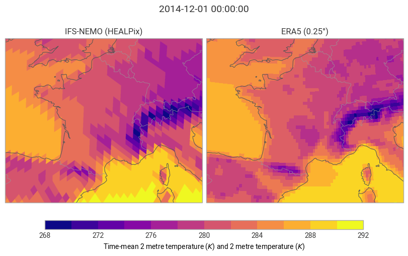
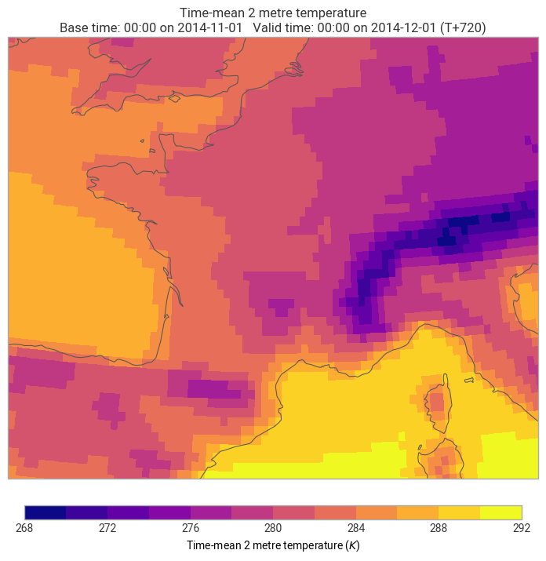
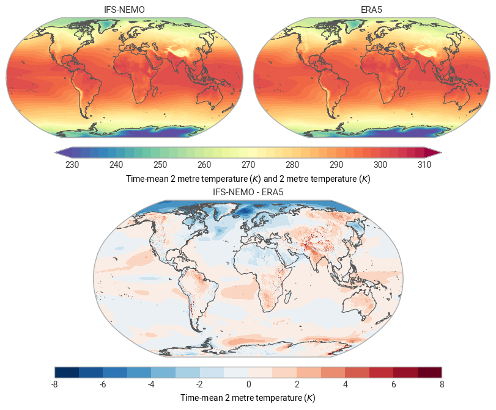
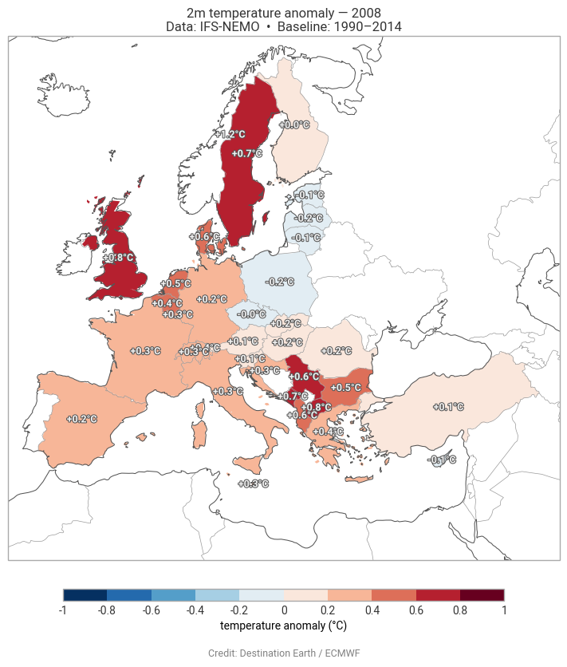
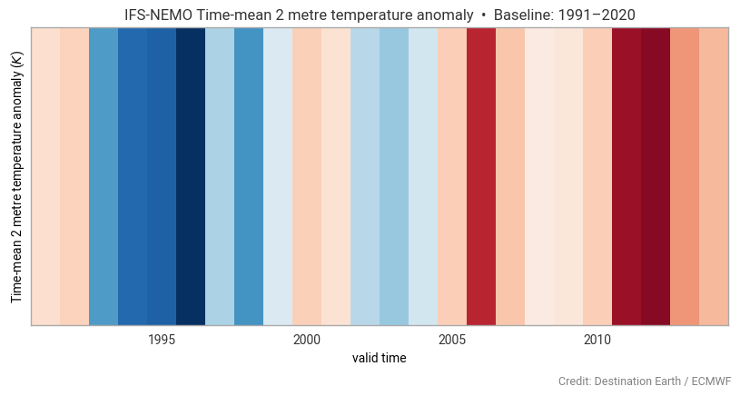
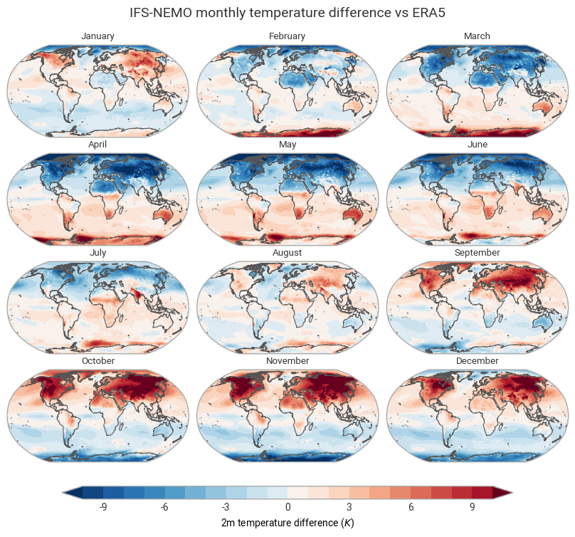

Analysing Destination Earth Climate Digital Twins with earthkit#
This notebook works through a full analysis pipeline on multi-decadal Climate DT output: retrieval, regridding, temporal averaging, comparison against ERA5 reanalysis, climatology, anomaly calculation, spatial aggregation to administrative regions, and warming-stripe visualisation.
What you will learn
How to retrieve a multi-year monthly dataset from the Climate DT baseline stream
How to retrieve matching ERA5 data from the CDS for comparison
How to regrid and compute temporal means with
earthkit.transformsHow to compute climatologies and anomalies
How to spatially aggregate to NUTS administrative regions
How to make choropleth and warming-stripe charts with
earthkit.plots
This notebook uses the following components of earthkit:


Setup#
Show code cell source
import earthkit.data as ekd
import earthkit.plots as ekp
import earthkit.geo as ekg
import earthkit.transforms as ekt
import numpy as np
import xarray as xr
xr.set_options(keep_attrs=True)
<xarray.core.options.set_options at 0x108990b10>
Retrieve the Climate DT baseline run (IFS-NEMO)#
The baseline activity contains historical simulations driven by observed forcing. Here we pull
the IFS-NEMO coupled model, monthly-mean 2 m temperature (param: 228004), for all 25 years of
the 1990–2014 period across all 12 months.
Key differences from the projections request in notebook 01
Field |
Value |
Meaning |
|---|---|---|
|
|
Historical run |
|
|
Historical forcing |
|
|
Climate monthly mean stream |
|
|
25-year range using Polytope range syntax |
|
|
All calendar months |
This produces 300 fields (25 years × 12 months), each on the native HEALPix grid. The download is ~126 MB.
Show code cell source
request = {
"class": "d1",
"dataset": "climate-dt",
"type": "fc",
"expver": "0001",
"generation": "2",
"realization": "1",
"activity": "baseline",
"experiment": "hist",
"model": "ifs-fesom",
"param": "228004", # 2 m temperature, monthly mean
"levtype": "sfc",
"resolution": "standard",
"stream": "clmn",
"year": "1990/to/2014",
"month": "1/2/3/4/5/6/7/8/9/10/11/12",
}
ifs_nemo = ekd.from_source(
"polytope",
"destination-earth",
request,
address="polytope.lumi.apps.dte.destination-earth.eu",
stream=False,
)
2026-06-05 14:13:10 - INFO - Key read from /Users/mavj/.polytopeapirc
2026-06-05 14:13:10 - INFO - Sending request...
{'request': 'activity: baseline\n'
'class: d1\n'
'dataset: climate-dt\n'
'experiment: hist\n'
"expver: '0001'\n"
"generation: '2'\n"
'levtype: sfc\n'
'model: ifs-fesom\n'
'month: 1/2/3/4/5/6/7/8/9/10/11/12\n'
"param: '228004'\n"
"realization: '1'\n"
'resolution: standard\n'
'stream: clmn\n'
'type: fc\n'
'year: 1990/to/2014\n',
'verb': 'retrieve'}
2026-06-05 14:13:10 - INFO - Polytope user key found in session cache for user mavj
2026-06-05 14:13:10 - INFO - Request accepted. Please poll ./8f7d7cff-bf3b-4309-93bb-4e3b9cb271dc for status
2026-06-05 14:13:10 - INFO - Polytope user key found in session cache for user mavj
2026-06-05 14:13:10 - INFO - Checking request status (8f7d7cff-bf3b-4309-93bb-4e3b9cb271dc)...
2026-06-05 14:13:11 - INFO - The current status of the request is 'queued'
2026-06-05 14:13:11 - INFO - The current status of the request is 'processing'
2026-06-05 14:13:17 - INFO - The current status of the request is 'processed'
Retrieve ERA5 reanalysis from the Cliamte Data Store for the same period#
ERA5 is ECMWF’s fifth-generation global reanalysis, widely used as the reference observational climatology. We pull the same variable (2 m temperature), same period, and same temporal resolution (monthly means) from the Copernicus Climate Data Store (CDS).
The CDS request uses a different vocabulary (product_type, variable by name) but earthkit
normalises both datasets into the same interface, so downstream code is identical.
Note that in order to access data from the Climate Data Store, you need to register and set up your API key access.
Show code cell source
dataset = "reanalysis-era5-single-levels-monthly-means"
request = {
"product_type": ["monthly_averaged_reanalysis"],
"variable": ["2m_temperature"],
"year": [str(year) for year in range(1990, 2015)],
"month": [f"{month:02d}" for month in range(1, 13)],
"time": ["00:00"],
"data_format": "grib",
"download_format": "unarchived",
}
era5 = ekd.from_source("cds", dataset, request)
2026-06-05 14:13:20,680 INFO Request ID is e796b9bc-9c62-42b4-abbb-4d857c989a41
2026-06-05 14:13:20,755 INFO status has been updated to accepted
2026-06-05 14:13:39,061 INFO status has been updated to successful
Before committing to heavy computation, it’s worth visually checking that both datasets look
reasonable for the same date. ekp.Figure with rows=1, columns=2 places both maps in a single
row. We use December 2014 (the last month in the dataset) as a representative snapshot.
At this point the IFS-NEMO data is still on the HEALPix grid and ERA5 is on its native 0.25 °
regular lat-lon grid — the grid_cells renderer handles both transparently.
Show code cell source
DATE = "2014-12-01"
fig = ekp.Figure(rows=1, columns=2, domain=["France", "Belgium"])
fig.add_map().grid_cells(ifs_nemo.to_fieldlist().sel({"time.valid_datetime": DATE}))
fig.add_map().grid_cells(era5.to_fieldlist().sel({"time.valid_datetime": DATE}))
fig.title("{time.valid_datetime}", y=0.7)
fig[0].title("IFS-NEMO (HEALPix)")
fig[1].title("ERA5 (0.25°)")
fig.legend()
fig.coastlines()
fig.borders()

Regridding with earthkit-geo#
To do arithmetic between IFS-NEMO and ERA5 we need them on the same grid. We regrid IFS-NEMO down to the ERA5 native resolution (0.25 ° × 0.25 °) using bilinear interpolation.
This is computationally the most expensive step (~300 fields). The interpolation weights are cached so re-runs are fast.
Show code cell source
ifs_nemo_regridded = ekg.regrid(ifs_nemo.to_fieldlist(), [0.25, 0.25])
Verify the regridded snapshot#
A quick visual check that the regridded IFS-NEMO field looks plausible before we proceed.
Show code cell source
ekp.geo.grid_cells(
ifs_nemo_regridded.sel({"time.valid_datetime": DATE}),
domain=["France", "Belgium"]
)
<earthkit.plots.components.maps.Map at 0x30c83b8d0>

Statistics with earthkit-transforms#
ekt.temporal.mean collapses the time dimension, returning a single field per variable that
represents the 1990–2014 mean. This is done on xarray Datasets (after .to_xarray()) for
IFS-NEMO, and directly on the fieldlist for ERA5 — both paths produce compatible results.
We rename the IFS-NEMO variable from avg_2t to 2t to match the ERA5 naming before
computing the difference.
Show code cell source
ifs_nemo_mean = (
ekt.temporal.mean(ifs_nemo_regridded.to_xarray(time_dims="valid_time"))
.rename_vars({"avg_2t": "2t"})
)
Show code cell source
era5_mean = ekt.temporal.mean(era5)
The difference between IFS-NEMO and ERA5 2m temperature shows us where IFS-NEMO is warmer or colder than ERA5. Because both objects are on the same grid, the subtraction aligns by coordinate automatically.
Show code cell source
diff = ifs_nemo_mean - era5_mean
We plot the 25-year mean for each dataset and their difference in a 2 × 2 Figure (with the difference spanning the full bottom row). The Robinson projection works well for global maps.
The diverging RdBu_r palette on the difference panel makes warm and cold differences immediately
legible: blue = IFS-NEMO is warmer than ERA5, red = IFS-NEMO is colder.
Show code cell source
fig = ekp.Figure(crs="Robinson", rows=2, columns=2)
climatedt_plot = fig.add_map()
climatedt_plot.plot(ifs_nemo_mean)
climatedt_plot.title("IFS-NEMO")
era5_plot = fig.add_map()
era5_plot.plot(era5_mean)
era5_plot.title("ERA5")
diff_plot = fig.add_map(row=1, column=slice(0, 2))
diff_plot.grid_cells(diff, levels=range(-8, 9), colors="RdBu_r")
diff_plot.title("IFS-NEMO - ERA5")
fig.title("{time}")
fig.coastlines()
fig.legend()
fig.show()

Spatial and temporal statistics#
The remaining sections use the full regridded IFS-NEMO time series to compute climatologies, anomalies, and spatially-aggregated statistics.
ekt.climatology.mean computes the long-term mean (here averaged over all months and years).
ekt.climatology.anomaly subtracts it from each time step at the requested frequency — "year"
means we first average each calendar year before computing the departure from the climatology,
giving one anomaly field per year.
Show code cell source
ds = ifs_nemo_regridded.to_xarray(time_dims="valid_time")
climatology_mean = ekt.climatology.mean(ds)
anom = ekt.climatology.anomaly(ds, climatology_mean, frequency="year")
Show code cell source
# Inspect the anomaly dataset: 25 annual time steps on the 0.25° grid
anom
<xarray.Dataset> Size: 216MB
Dimensions: (latitude: 721, longitude: 1440, valid_time: 26)
Coordinates:
* latitude (latitude) float64 6kB 90.0 89.75 89.5 ... -89.5 -89.75 -90.0
* longitude (longitude) float64 12kB 0.0 0.25 0.5 0.75 ... 359.2 359.5 359.8
* valid_time (valid_time) datetime64[ns] 208B 1990-12-31 ... 2015-12-31
Data variables:
avg_2t (valid_time, latitude, longitude) float64 216MB 0.9208 ... 18.28
Attributes:
Conventions: CF-1.8
institution: ECMWFNUTS (Nomenclature of Territorial Units for Statistics) is the EU’s hierarchical system for administrative regions. Level 0 corresponds to countries. earthkit ships this dataset as a built-in sample so no separate download is needed.
Show code cell source
nuts_level_0 = ekd.from_source("sample", "NUTS_RG_60M_2021_4326_LEVL_0.geojson").to_pandas()
ekt.spatial.reduce aggregates gridded data to arbitrary polygons. Key options:
Option |
Value |
Effect |
|---|---|---|
|
cosine-area weighting |
Corrects for grid cells shrinking toward the poles |
|
region label column |
Names each aggregated region |
|
output format |
Returns a tidy DataFrame |
|
rasterisation rule |
Includes cells that touch a polygon boundary |
We select a single anomaly year before aggregating to keep the computation fast.
Show code cell source
YEAR = 2008
nuts_anom = ekt.spatial.reduce(
anom.sel(valid_time=f"{YEAR}-12-31"),
nuts_level_0,
weights="latitude",
mask_dim="NAME_LATN",
return_as="pandas",
all_touched=True,
)
nuts_anom
| id | NUTS_ID | LEVL_CODE | CNTR_CODE | NAME_LATN | NUTS_NAME | MOUNT_TYPE | URBN_TYPE | COAST_TYPE | FID | geometry | valid_time | avg_2t | |
|---|---|---|---|---|---|---|---|---|---|---|---|---|---|
| NAME_LATN | |||||||||||||
| Danmark | DK | DK | 0 | DK | Danmark | Danmark | 0 | 0 | 0 | DK | MULTIPOLYGON (((15.1629 55.0937, 15.094 54.996... | 2008-12-31 | 0.573214 |
| Serbia | RS | RS | 0 | RS | Serbia | Srbija/Сpбија | 0 | 0 | 0 | RS | POLYGON ((21.4792 45.193, 21.3585 44.8216, 22.... | 2008-12-31 | 0.638894 |
| Eesti | EE | EE | 0 | EE | Eesti | Eesti | 0 | 0 | 0 | EE | MULTIPOLYGON (((27.357 58.7871, 27.6449 57.981... | 2008-12-31 | -0.140054 |
| Elláda | EL | EL | 0 | EL | Elláda | Ελλάδα | 0 | 0 | 0 | EL | MULTIPOLYGON (((28.0777 36.1182, 27.8606 35.92... | 2008-12-31 | 0.385529 |
| España | ES | ES | 0 | ES | España | España | 0 | 0 | 0 | ES | MULTIPOLYGON (((4.391 39.8617, 4.1907 39.7981,... | 2008-12-31 | 0.238526 |
| Suomi/Finland | FI | FI | 0 | FI | Suomi/Finland | Suomi/Finland | 0 | 0 | 0 | FI | MULTIPOLYGON (((28.8967 69.0426, 28.4782 68.51... | 2008-12-31 | 0.025170 |
| France | FR | FR | 0 | FR | France | France | 0 | 0 | 0 | FR | MULTIPOLYGON (((55.8498 -21.1858, 55.7858 -21.... | 2008-12-31 | 0.344974 |
| Hrvatska | HR | HR | 0 | HR | Hrvatska | Hrvatska | 0 | 0 | 0 | HR | MULTIPOLYGON (((17.6515 45.8478, 17.9121 45.79... | 2008-12-31 | 0.275761 |
| Magyarország | HU | HU | 0 | HU | Magyarország | Magyarország | 0 | 0 | 0 | HU | POLYGON ((22.1211 48.3783, 22.1553 48.4034, 22... | 2008-12-31 | 0.168932 |
| Éire/Ireland | IE | IE | 0 | IE | Éire/Ireland | Éire/Ireland | 0 | 0 | 0 | IE | POLYGON ((-7.1885 54.3377, -6.8642 54.3302, -6... | 2008-12-31 | NaN |
| Ísland | IS | IS | 0 | IS | Ísland | Ísland | 0 | 0 | 0 | IS | POLYGON ((-22.1255 64.0406, -21.7569 64.3256, ... | 2008-12-31 | NaN |
| Italia | IT | IT | 0 | IT | Italia | Italia | 0 | 0 | 0 | IT | MULTIPOLYGON (((12.2407 47.0692, 12.2117 46.89... | 2008-12-31 | 0.276437 |
| Liechtenstein | LI | LI | 0 | LI | Liechtenstein | Liechtenstein | 0 | 0 | 0 | LI | POLYGON ((9.6206 47.1516, 9.6071 47.0608, 9.47... | 2008-12-31 | 0.367954 |
| Lietuva | LT | LT | 0 | LT | Lietuva | Lietuva | 0 | 0 | 0 | LT | POLYGON ((22.9205 56.3991, 23.1554 56.3288, 24... | 2008-12-31 | -0.109003 |
| Luxembourg | LU | LU | 0 | LU | Luxembourg | Luxembourg | 0 | 0 | 0 | LU | POLYGON ((6.1377 50.13, 6.475 49.8213, 6.3801 ... | 2008-12-31 | 0.307578 |
| Latvija | LV | LV | 0 | LV | Latvija | Latvija | 0 | 0 | 0 | LV | POLYGON ((27.6908 57.3706, 28.1546 56.1698, 27... | 2008-12-31 | -0.159410 |
| Crna Gora | ME | ME | 0 | ME | Crna Gora | Црна Гора | 0 | 0 | 0 | ME | POLYGON ((20.0639 43.0068, 20.3529 42.8334, 20... | 2008-12-31 | 0.668818 |
| Severna Makedonija | MK | MK | 0 | MK | Severna Makedonija | Северна Македонија | 0 | 0 | 0 | MK | POLYGON ((22.9683 41.5198, 22.9276 41.3385, 22... | 2008-12-31 | 0.787854 |
| Malta | MT | MT | 0 | MT | Malta | Malta | 0 | 0 | 0 | MT | MULTIPOLYGON (((14.6459 35.9333, 14.4334 35.71... | 2008-12-31 | 0.274116 |
| Sverige | SE | SE | 0 | SE | Sverige | Sverige | 0 | 0 | 0 | SE | MULTIPOLYGON (((20.5486 69.06, 23.4078 68.023,... | 2008-12-31 | 0.674752 |
| Slovenija | SI | SI | 0 | SI | Slovenija | Slovenija | 0 | 0 | 0 | SI | POLYGON ((16.3708 46.7222, 16.5968 46.4759, 16... | 2008-12-31 | 0.067402 |
| Slovensko | SK | SK | 0 | SK | Slovensko | Slovensko | 0 | 0 | 0 | SK | POLYGON ((19.4674 49.6138, 19.8839 49.2042, 20... | 2008-12-31 | 0.161772 |
| Türkiye | TR | TR | 0 | TR | Türkiye | Türkiye | 0 | 0 | 0 | TR | MULTIPOLYGON (((35.5137 41.636, 35.9494 41.699... | 2008-12-31 | 0.083301 |
| United Kingdom | UK | UK | 0 | UK | United Kingdom | United Kingdom | 0 | 0 | 0 | UK | MULTIPOLYGON (((-0.1102 51.5096, -0.0247 51.48... | 2008-12-31 | 0.752657 |
| Nederland | NL | NL | 0 | NL | Nederland | Nederland | 0 | 0 | 0 | NL | MULTIPOLYGON (((7.2028 53.1133, 7.0927 52.8382... | 2008-12-31 | 0.481099 |
| Polska | PL | PL | 0 | PL | Polska | Polska | 0 | 0 | 0 | PL | POLYGON ((18.5417 54.5845, 18.95 54.3583, 19.6... | 2008-12-31 | -0.176064 |
| Portugal | PT | PT | 0 | PT | Portugal | Portugal | 0 | 0 | 0 | PT | MULTIPOLYGON (((-8.199 42.1544, -8.1651 41.818... | 2008-12-31 | NaN |
| România | RO | RO | 0 | RO | România | România | 0 | 0 | 0 | RO | POLYGON ((27.3912 47.5894, 28.1138 46.8384, 28... | 2008-12-31 | 0.177967 |
| Shqipëria | AL | AL | 0 | AL | Shqipëria | Shqipëria | 0 | 0 | 0 | AL | POLYGON ((20.0763 42.5558, 20.2649 42.3929, 20... | 2008-12-31 | 0.583699 |
| Österreich | AT | AT | 0 | AT | Österreich | Österreich | 0 | 0 | 0 | AT | POLYGON ((16.9403 48.6172, 16.9498 48.5358, 16... | 2008-12-31 | 0.134516 |
| Belgique/België | BE | BE | 0 | BE | Belgique/België | Belgique/België | 0 | 0 | 0 | BE | POLYGON ((5.5663 51.2208, 5.7983 51.0599, 5.76... | 2008-12-31 | 0.448432 |
| Bulgaria | BG | BG | 0 | BG | Bulgaria | България | 0 | 0 | 0 | BG | POLYGON ((22.9664 44.0983, 22.9972 43.8079, 23... | 2008-12-31 | 0.496493 |
| Schweiz/Suisse/Svizzera | CH | CH | 0 | CH | Schweiz/Suisse/Svizzera | Schweiz/Suisse/Svizzera | 0 | 0 | 0 | CH | POLYGON ((9.1822 47.6559, 9.4956 47.5515, 9.55... | 2008-12-31 | 0.284508 |
| Kýpros | CY | CY | 0 | CY | Kýpros | Κύπρος | 0 | 0 | 0 | CY | POLYGON ((33.6251 34.8511, 32.9417 34.6418, 32... | 2008-12-31 | -0.138830 |
| Česko | CZ | CZ | 0 | CZ | Česko | Česko | 0 | 0 | 0 | CZ | POLYGON ((14.4912 51.0435, 14.6188 50.8578, 14... | 2008-12-31 | -0.025651 |
| Deutschland | DE | DE | 0 | DE | Deutschland | Deutschland | 0 | 0 | 0 | DE | MULTIPOLYGON (((9.1131 54.8736, 9.2736 54.8117... | 2008-12-31 | 0.212809 |
| Norge | NO | NO | 0 | NO | Norge | Norge | 0 | 0 | 0 | NO | MULTIPOLYGON (((28.8967 69.0426, 29.1537 69.58... | 2008-12-31 | 1.223447 |
A choropleth fills each polygon with a colour proportional to its aggregated value. We add
direct data labels (labels="{avg_2t:+.1f}°C") so the magnitude of the anomaly is readable
without needing to consult the legend. The + format flag forces the sign to be shown on both
positive and negative values.
Show code cell source
chart = ekp.Map(domain="Europe")
chart.choropleth(
nuts_anom,
z="avg_2t",
levels=np.linspace(-1, 1, 11),
colors="RdBu_r",
zorder=0,
labels="{avg_2t:+.1f}°C"
)
chart.legend(label="temperature anomaly (°C)")
chart.title(
f"2m temperature anomaly — {YEAR}\n"
"Data: IFS-NEMO • Baseline: 1990–2014"
)
chart.attribution("Credit: Destination Earth / ECMWF")
chart.coastlines()
chart.borders()
chart.show()

ekt.spatial.reduce without a polygon argument collapses to a single global mean value per time
step — effectively a globally-averaged time series. We trim to the 1990–2013 range to exclude
the partial year at each end.
Show code cell source
global_mean = ekt.spatial.reduce(anom).sel(valid_time=slice("1990-01-01", "2014-01-01"))
Warming stripes encode a temperature time series as a sequence of coloured bars — no axes, no numbers, just colour. Originally created by Ed Hawkins (University of Reading), the format has become a widely recognised communication tool for climate change.
ekp.timeseries.stripes implements this directly. We add sparse x-axis tick marks (every 5
years) and a brief title to provide just enough context.
Show code cell source
chart = ekp.timeseries.stripes(global_mean, cmap="RdBu_r")
chart.xticks(frequency="5Y")
chart.title("IFS-NEMO {variable_name} • Baseline: 1991–2020")
chart.attribution("Credit: Destination Earth / ECMWF", location="lower right")
chart.show()

Exercises#
Instead of finding the difference between IFS-NEMO and ERA5 over the whole time period, calculate monthly climatologies for both IFS-NEMO and ERA5 and find the differences for each month (hint: try
ekt.climatology.monthly_mean). Do the differences change throughout the year?
Show code cell source
ifs_nemo_monthly_mean = ekt.climatology.monthly_mean(
ifs_nemo_regridded.to_xarray(time_dims="valid_time")
).rename_vars({"avg_2t": "2t"})
era5_monthly_mean = ekt.climatology.monthly_mean(era5)
monthly_diff = ifs_nemo_monthly_mean - era5_monthly_mean
fig = ekp.Figure(crs="Robinson", rows=4, columns=3)
for month in range(1, 13):
fig.add_map().plot(monthly_diff.sel(month=month), levels=range(-10, 11), colors="RdBu_r")
fig.subplot_titles("{month}")
fig.title("IFS-NEMO monthly temperature difference vs ERA5", y=1.05)
fig.legend(label="2m temperature difference ({units})")
fig.coastlines()

Summary#
In this notebook you built a complete analysis pipeline:
Retrieved 25 years of monthly IFS-NEMO and ERA5 data
Regridded IFS-NEMO from HEALPix to 0.25 ° to match ERA5
Computed 25-year temporal means and visualised the model differences globally
Computed annual temperature anomalies relative to the 1990–2014 climatology
Aggregated anomalies to NUTS-0 country polygons with area weighting
Visualised the results as a choropleth map and as warming stripes
To continue exploring earthkit, see the earthkit website, documentation or GitHub.